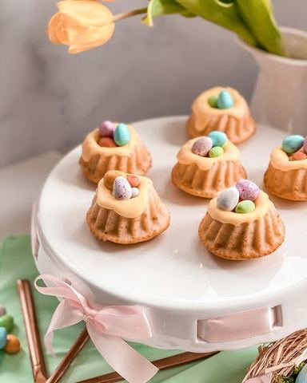

Moja beleška
SačuvanoJoš jedna ideja za pripremu poslastice za Uskrs koja će vam oduzeti malo vremena, a ukusom i izgledom neće razočarati 🥰 Mini kuglofi od vanila testa preliveni belom čokoladom, pa još uz dodatak slatkih šarenih bombonica 🥰🥰🥰
Sastojci
- Sastojci
- Još
Priprema
Mikserom umutiti puter, šećere i jaje, pa tome dodati mleko i promešati. Sjedinjene suve sastojke dodati smesi iz dva, tri puta, pa lepo umutiti. Ja sam ih pripremala u silikonskim kalupima i svaki sam napunila do 2/3, a pekla sam ih na 180C u zagrejanoj rerni bez ventilatora i tako su ostali lepo ravni po površini. Ostavite ih 10ak minuta da se prohlade pa izvadite iz kalupa. Ukoliko rešite da smesi dodate voće ili komadiće čokolade, moj savet je da dodate već umućenoj smesi i povežete samo lagano, bez upotrebe miksera, i u tom slučaju kalupiće malo premažite puterom ili uljem i pospite brašnom. Otopite belu čokoladu sa nemućenom slatkom pavlakom, lagano, lepo umešajte pa dodajte truncicu boje po ukusu i prelijte ivice kuglova.. Koristila sam samo malo slatke pavlake kako bih dobila gušću smesu koja se neće prelivati niz ivice puno. U sredinu sipajte bombonice i dobijate malena Uskršnja gnezda 🥰 Uživajte u pripremi i isprobavanju 💓
Originalni opis sa Instagrama
Uskršnji mini kuglofi 🐰🐣🌸 Još jedna ideja za pripremu poslastice za Uskrs koja će vam oduzeti malo vremena, a ukusom i izgledom neće razočarati 🥰 Mini kuglofi od vanila testa preliveni belom čokoladom, pa još uz dodatak slatkih šarenih bombonica 🥰🥰🥰 Sastojci: •1 jaje •180 gr šećera •1 vanil šećer •125 gr otopljenog putera •220 ml mleka •250 gr brašna •1/2 praška za pecivo •prhosvat sode bikarbone •prhosvat soli Još: •150 gr bele čokolade •6 kašika slatke pavlake Mikserom umutiti puter, šećere i jaje, pa tome dodati mleko i promešati. Sjedinjene suve sastojke dodati smesi iz dva, tri puta, pa lepo umutiti. Ja sam ih pripremala u silikonskim kalupima i svaki sam napunila do 2/3, a pekla sam ih na 180C u zagrejanoj rerni bez ventilatora i tako su ostali lepo ravni po površini. Ostavite ih 10ak minuta da se prohlade pa izvadite iz kalupa. Ukoliko rešite da smesi dodate voće ili komadiće čokolade, moj savet je da dodate već umućenoj smesi i povežete samo lagano, bez upotrebe miksera, i u tom slučaju kalupiće malo premažite puterom ili uljem i pospite brašnom. Otopite belu čokoladu sa nemućenom slatkom pavlakom, lagano, lepo umešajte pa dodajte truncicu boje po ukusu i prelijte ivice kuglova.. Koristila sam samo malo slatke pavlake kako bih dobila gušću smesu koja se neće prelivati niz ivice puno. U sredinu sipajte bombonice i dobijate malena Uskršnja gnezda 🥰 Uživajte u pripremi i isprobavanju 💓 • • • #minikuglof #kuglof #uskrsnjikuglof #uskrsnjikolaci #uskrsnjeposlastice #slatkisi #idejezadezert #mojirecepti #easterminicake #easterdecoration #zadovoljnahr